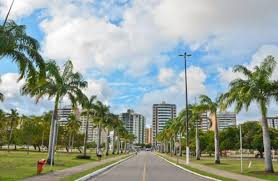

Sementeira

O parque pode ser utilizado pelos aracajuanos e turista para prática de atividades esportivas e de lazer alem de outras atividades em contato com a natureza. O espaço conta com paeque infantil, campo de futebol quadra poliesportiva, espaço com aparelho para exercicios fisicos pista para caminhada, quiosque para piquiniques, sanitários, lagos, e iluminação adequada.
Atrativos do Parque da Sementeira
- Parque infantil
- Campo de futebol
- Quadra poliesportiva
- Aparelhos para exercicios fisicos
- Pista para caminhadas
- Quiosques para piquiniques
- Sanitarios
- Lagos e áreas verses
- iluminação adequada para visitas noturnas